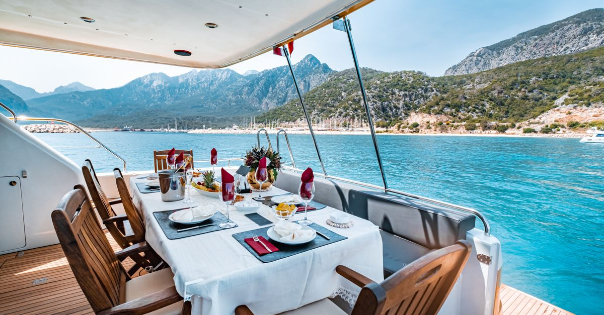
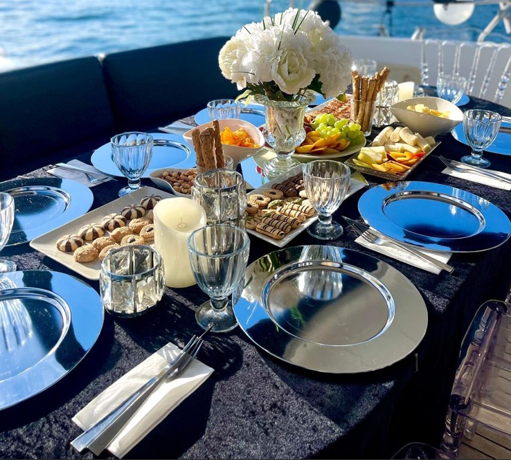
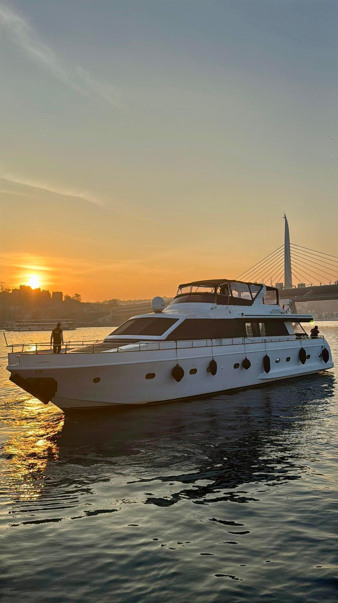
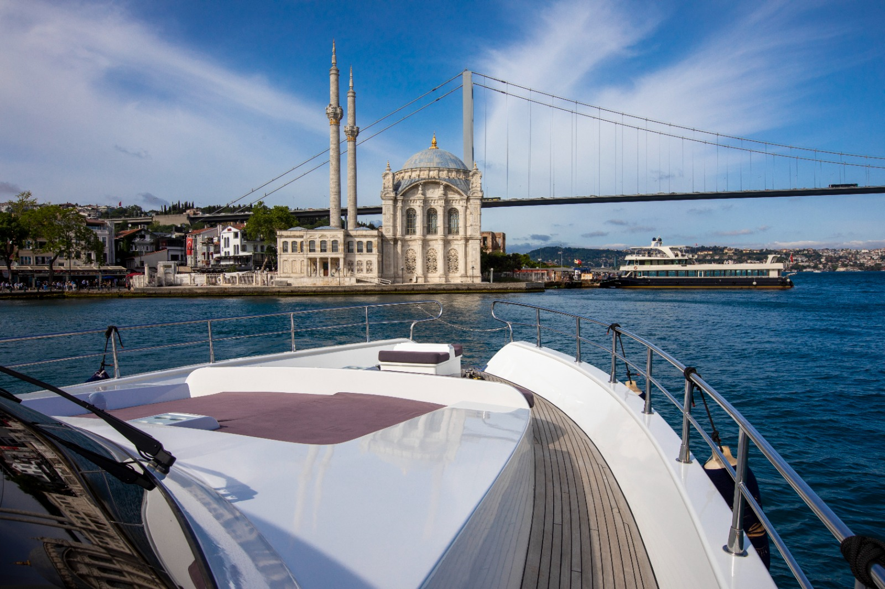
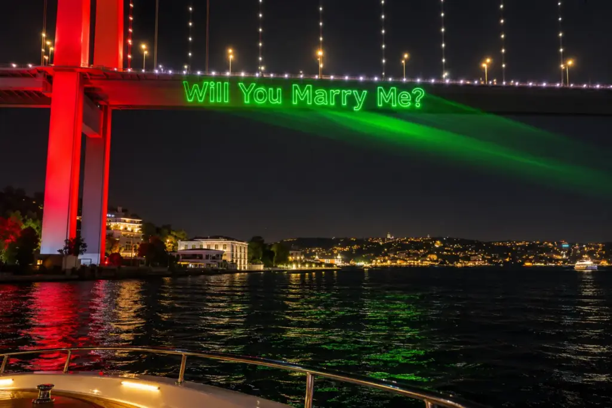
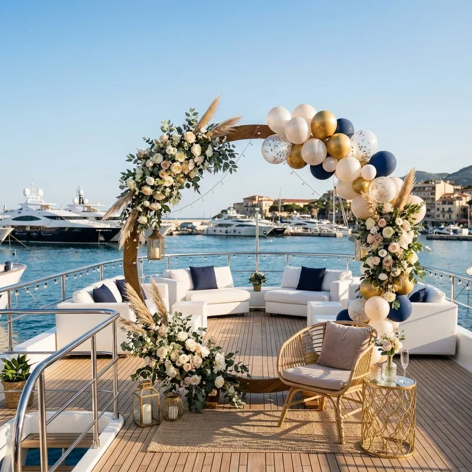
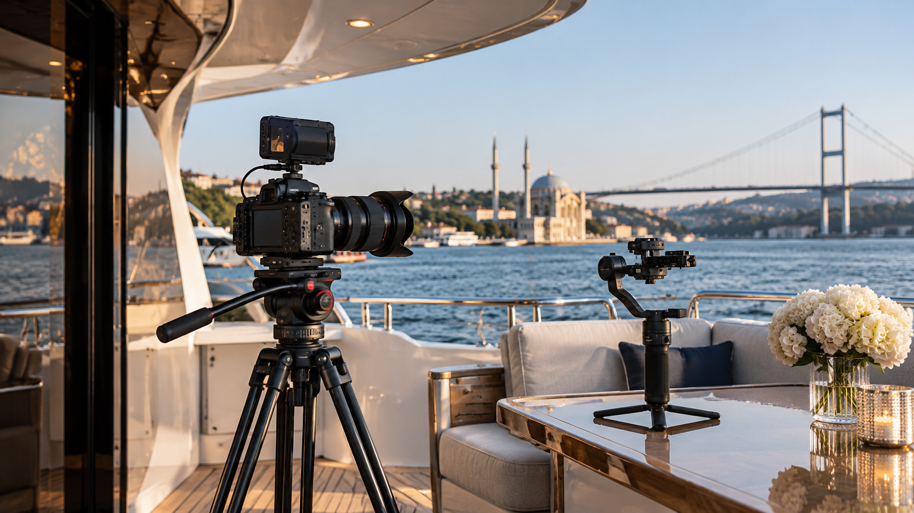
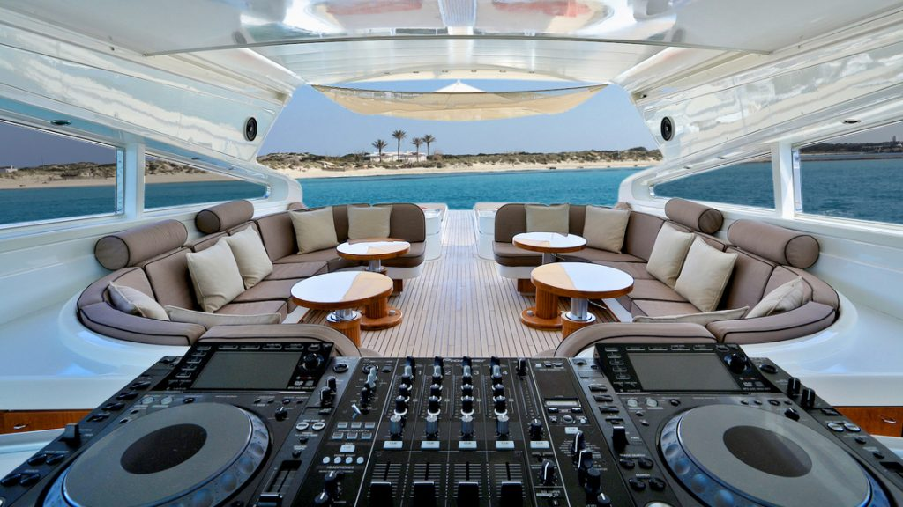

Luxury 2
18 metresUp to 12 guests
€150 / hourMinimum 2 hours · €300
A relaxed private setting for couples, families and smaller groups who want to enjoy the city from the water.
Enquire about Luxury 2PRIVATE YACHT EXPERIENCES · ISTANBUL
Trade the ordinary sightseeing route for a private moment on the water. Whether it is a quiet escape, a family outing or a celebration with friends, we will help coordinate a yacht experience around your group.
A DIFFERENT VIEW OF ISTANBUL
See Istanbul from the Bosphorus with the flexibility of a private charter. Choose the yacht size that suits your group, then add the details that make the occasion yours — from dining and refreshments to celebration touches and entertainment.
PERSONALISE THE EXPERIENCE
Make your time on the water feel personal with optional extras. Select what interests you in the enquiry form and we will confirm the details and price.

DINING
Enjoy a set menu served on board, with Istanbul drifting by. €50 per person.

LIGHT REFRESHMENTS
Choose a selection of crudités, crackers, nuts, crisps, fruit and soft drinks for an easy-going time on the water. €35 per person.

A LIVELY CELEBRATION
Arrange an oriental dance performance on board for a memorable celebration. €200.

GOLDEN HOUR
Ask about a late-afternoon or sunset departure for a softer, more atmospheric view of Istanbul.

THE CITY FROM THE WATER
Enjoy a private perspective on the waterfront, bridges and landmarks along the Bosphorus.

A PERSONAL MESSAGE
Add a personalised laser message on the Bosphorus Bridge for a proposal, anniversary or a celebration worth remembering. €100.

CELEBRATE
Give birthdays and special moments a thoughtful touch with balloon decoration. €80.

KEEP THE MEMORY
Arrange professional photography and a mini video, with the finished files delivered online after the experience. Includes a 2-hour session. €150.

LIVE ENTERTAINMENT
Bring the celebration to life with a live fasıl music performance on board. €300.
YOUR REQUEST, YOUR WAY
Tell us what you have in mind. We will check what can be arranged and return with the available options.
Plan your experienceIncluded with the charterTea, coffee, water and the yacht sound system. The quoted charter rate includes standard yacht fees; optional extras are quoted separately.
Two-hour minimumEvery private charter request starts at two hours.
Flexible pickup requestsUnkapanı and Karaköy are standard pickup/drop-off points; other locations may affect the quote.
A SIMPLE WAY TO START
Share your date, timing, group size and the occasion.
We check availability and return with a tailored quote.
Review the agreed yacht, extras, pickup point and supplier terms before confirming.
LET'S PLAN YOUR PRIVATE CHARTER
Send us the basics and our concierge team will help coordinate the next step. This form starts an enquiry only; the booking is not confirmed until availability, final pricing and terms have been agreed.